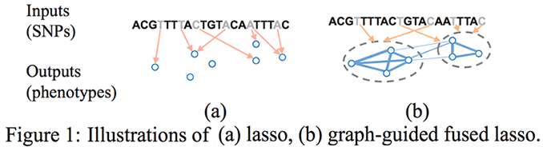

Introduction to Dimension Reduction
Linear Regression and Least Squares (Review)
Subset Selection
Shrinkage Method
Beyond Lasso
Sparse Models
CMPUT 466/551
Ping Jin (pjin1@ualberta.ca)
Outline
Part 1: Introduction to Dimension Reduction
- Introduction to Dimension Reduction
- General notations
- Motivations
- Feature selection and feature extraction
- Feature Selection
- Wrapper method
- Filter method
- Embedded method
- Feature Extraction
- PCA, ICA...
- Linear Regression and Least Squares (Review)
- Subset Selection
- Shrinkage Method
- Beyond Lasso
General Notations
Dataset
- \(\mathbf{X}\): columnwise centered \(N \times p\) matrix
- \(N:\) # samples, \(p:\) # features
- \(\mathbf{y}\): \(N \times 1\) vector of labels(classification) or continous values(regression)
Basic Model
- Linear Regression
- Assumption: the regression function \(E(Y|X)\) is linear \[f(X) = X\beta\]
- \(\beta\): \(p \times 1\) vector of coefficients
Motivations
- Dimension reduction is about transforming data with high dimensionality into data of much lower dimensionality
- Computational efficiency: less dimensions require less computations
- Accuracy: lower risk of overfitting
- Categories
- Feature Selection:
- chooses a subset of features from the original feature set
- Feature Extraction:
- transforms the original features into new ones, linearly or non-linearly
- e.g. projects data from high dimensions to low dimensions
- Feature Selection:
Feature Selection and Feature Extraction
Feature Selection
- Interpretation
- Cost constraint: computation, cost, etc.
Feature Extraction
- More flexible. Feature selection is a spectial case of linear feature extraction
Feature Selection and Feature Extraction
Example 1: Prostate Cancer
- Response: level of prostate-specific antigen (lpsa).
- Inputs: \[\{lcavol, lweight, age, lbph, svi, lcp, gleason, pgg45\}.\]
- Task:
- predict \(lpsa\) from measurements of features
Feature selection applies better
- Cost: Measuring features cost money
- Interpretation: Doctors can see which features are important
Feature Selection and Feature Extraction
Example 2: classification with fMRI data
fMRI data are 4D images, with one dimension being the time slot.
Each image is ~ \(50 \times 50 \times 50\)(spatial) \(\times 200\)(times) \(= 25m\) dimensions
Feature extraction apllies better,
- Interpreation is not very important in this task
- Cost is not correlated with #features
- Feature extraction offers more flexibility in transforming features, which potentially results in better accuracy

Feature Selection Methods
Wrapper Methods
- search the space of feature subsets
- use the training/validation accuracy of a particular classifier as the measure of utility for a candidate subset

Feature Selection Methods
Embedded Methods
- exploit the structure of specific classes of learning models to guide the feature selection process
- e.g. LASSO. It is embedded as part of the model construction process

Feature Selection Methods
Filter Methods
- use some general rules/criterions to measure the feature selection results independent of the classifiers
- e.g. mutual information based method

Feature Selection
Comparison
| Wrapper | Filter | Embedded | |
|---|---|---|---|
| Speed | Low | High | Mid |
| Chance of Overfitting | High | Low | Mid |
| Classifier-Independent | No | Yes | No |
Feature Extraction
Principle Components Analysis
- A graphical explanation
- Each data sample has two features
- Often prefer the direction with larger variance
- Original features are transformed into new ones
- Example
- For fMRI images, we usually have millions of dimensions. PCA can project the data from millions of dimensions to only thousands of dimensions, or even less
- Other feature extraction methods: ICA, Kernel PCA , etc..

Part 2: Linear Regression and Least Squares (Review)
- Introduction to Dimension Reduction
- Linear Regression and Least Squares (Review)
- Least Square Fit
- Gauss Markov
- Bias-Variance tradeoff
- Problems
- Subset Selection
- Shrinkage Method
- Beyond Lasso
Linear Regression and Least Squares (Review)
Least Squares Fit
\[ \begin{equation} \begin{split} RSS(\beta) &= (\mathbf{y} - \mathbf{X}\beta)^T(\mathbf{y} - \mathbf{X}\beta)\\ \frac{\partial RSS}{\partial \beta} &= -2 \mathbf{X}^T(\mathbf{y} - \mathbf{X}\beta) = 0\\ \hat{\beta} &= (\mathbf{X}^T\mathbf{X})^{-1}\mathbf{X}^T\mathbf{y} \end{split} \end{equation} \]
Gauss Markov Theorem
The least squares estimates of the parameters β have the smallest variance among all linear unbiased estimates.
Question
Is it good to be unbiased?


Linear Regression and Least Squares (Review)
Bias-Variance tradeoff
\[ \begin{equation} \begin{split} MSE(\tilde{\theta}) &= E[(\tilde{\theta} - \theta)^2]\\ &= Var(\tilde{\theta}) + [E[\tilde{\theta}] - \theta] \end{split} \end{equation} \]
where \(\theta = \alpha^T \beta\). We can trade some bias for much less variance.
Problems of Least Squares
- Prediction accuracy: unbiased, but high variance compared to many biased estimators, overfitting noise and sensitive to outlier
- Interpretation: \(\hat{\beta}\) involves all of the features. Better to have SIMPLER linear model, that involves only a few features...
- \((\mathbf{X}^T\mathbf{X})\) may be not invertible and thus no closed form solution
Part 3: Subset Selection
- Introduction to Dimension Reduction
- Linear Regression and Least Squares (Review)
- Subset Selection
- Best-subset selection
- Forward stepwise selection
- Forward stagewise selection
- Problems
- Shrinkage Method
- Beyond Lasso
Subset Selection
Best-subset selection
- Best subset regression finds for each \(k \in \{0, 1, 2, . . . , p\}\) the subset of features of size \(k\) that gives smallest residual sum of squares. Then cross validation is utilized to choose the best \(k\)
- An efficient algorithm, the leaps and bounds procedure (Furnival and Wilson, 1974), makes this feasible for \(p\) as large as 30 or 40.

Subset Selection
Forward-STEPWISE selection
Instead of searching all possible subsets, we can seek a good path through them. This is a sequential greedy algorithm.
Forward-Stepwise Selection builds a model sequentially, adding one variable at a time.
- Initialization
- Active set \(\mathcal{A} = \emptyset\), \(\mathbf{r} = \mathbf{y}\), \(\beta = 0\)
- At each step, it
- identifies the best variable (with the highest correlation with the residual error) \[\mathbf{k} = argmax_{j}(|correlation(\mathbf{x}_j, \mathbf{r})|)\]
- \(A = A \cup \mathbf{k}\)
- then updates the least squares fit \(\beta\), \(\mathbf{r}\) to include all the active variables
Subset Selection
Forward-STAGEWISE Regression
Suppose that \(\mathbf{X}\) is columnwise centered
- Initialize the fit vector \(\mathbf{f} = 0\)
- For each time step
- Compute the correlation vector \(\mathbf{c} = (\mathbf{c}_1, ..\mathbf{c}_p)\), \(\mathbf{c}_j\) represents the correlation between \(\mathbf{x}_j\) and the residual error
- \(k = argmax_{j \in \{1,2,..,p\}} |\mathbf{c}_j|\)
- Coefficients and fit vector are updated \[\mathbf{f} \gets \mathbf{f} + \alpha \cdot sign(\mathbf{c}_k) \mathbf{x}_k\] \[\beta_k \gets \beta_k + \alpha \cdot sign(\mathbf{c}_k)\] where \(\alpha\) is the learning rate

Subset Selection
Comparison
- Forward-STEPWISE selection:
- algorithm stops in \(p\) steps
- Forward-STAGEWISE selection:
- is a slow fitting algorithm, at each time step, only \(\beta_k\) is updated. It can take more than \(p\) steps for the algorihtm to stop
- Forward stagewise is useful in high dimensional problem

- \(N = 300\) Obervations
- \(p = 31\) features
- averaged over 50 simulations
Subset Selection
Pros
- More interpretable
- More compact
Cons
- It is a discrete process, and thus has high variance and sensitivity to the change in dataset.
- If the dataset changes a little, the feature selection result may be very different
- Thus may not be able to lower prediction error
Part 4 Shrinkage Method
- Introduction to Dimension Reduction
- Linear Regression and Least Squares (Review)
- Subset Selection
- Shrinkage Method
- Ridge Regression
- Formulations and closed form solution
- Singular value decomposition
- Degree of Freedom
- Lasso
- Ridge Regression
- Beyond Lasso
Ridge Regression
- Least squares with quadratic constraints \[ \begin{equation} \hat{\beta}^{ridge}= argmin_{\beta}\sum_{i=1}^N(y_i - \beta_0 - \sum_{j=1}^p\mathbf{x}_{ij}\beta_j)^2, s.t. \sum_{j = 1}^p \beta_j^2 \leq t \end{equation} \]

Ridge Regression
- Least squares with quadratic constraints \[ \begin{equation} \hat{\beta}^{ridge}= argmin_{\beta}\sum_{i=1}^N(y_i - \beta_0 - \sum_{j=1}^p\mathbf{x}_{ij}\beta_j)^2, s.t. \sum_{j = 1}^p \beta_j^2 \leq t \end{equation} \]
- Its Lagrange form \[ \hat{\beta}^{ridge} = argmin_{\beta}\{\sum_{i=1}^N(y_i - \beta_0 - \sum_{j=1}^p\mathbf{x_{ij}}\beta_j)^2 + \lambda \sum_{j = 1}^p\beta_j^2\} \]
The \(l_2\)-regularization can be viewed as a Gaussian prior on the coefficients, and our estimates are the posterior means
Solution
\[ \begin{equation} \begin{split} &RSS(\lambda) = (\mathbf{y} - \mathbf{X}\beta)^T(\mathbf{y} - \mathbf{X}\beta) + \lambda \beta^T\beta\\ &\hat{\beta}^{ridge} = (\mathbf{X}^T\mathbf{X} + \lambda \mathbf{I})^{-1}\mathbf{X}^T\mathbf{y} \end{split} \end{equation} \]
Ridge Regression
Singular Value Decomposition (SVD)
SVD offers some additional insight into the nature of ridge regression.
- The SVD of \(\mathbf{X}\):
\[\mathbf{X} = \mathbf{UDV}^T\]
- \(\mathbf{U}\): \(N \times p\) orthogonal matrix with columns spanning the column space of \(\mathbf{X}\). \(\mathbf{u}_j\) is the $j$th column of \(\mathbf{U}\)
- \(\mathbf{V}\): \(p \times p\) orthogonal matrix with columns spanning the row space of \(\mathbf{X}\). \(\mathbf{v}_j\) is the $j$th column of \(\mathbf{V}\)
- \(\mathbf{D}\): \(p \times p\) diagonal matrix with diagonal entries \(d_1 \geq d_2 \geq ... \geq d_p \geq 0\) being the singular values of \(\mathbf{X}\)
Ridge Regression
Singular Value Decomposition (SVD)
- For least squares \[ \begin{equation} \begin{split} \mathbf{X}\hat{\beta}^{ls} &= \mathbf{X(X^TX)^{-1}X^Ty}\\ &=\mathbf{UU^Ty} \end{split} \end{equation} \]
- For ridge regression
\[
\begin{equation}
\begin{split}
\mathbf{X}\hat{\beta}^{ridge} &= \mathbf{X(X^TX + \lambda I)^{-1}X^Ty}\\
&=\sum_{j=1}^p\mathbf{u}_j\frac{d_j^2}{d_j^2 + \lambda} \mathbf{u}_j^T\mathbf{y}
\end{split}
\end{equation}
\]
- Compared with the solution of least squares, we have an additional shrinkage term \(\frac{d_j^2}{d_j^2 + \lambda}\), the smaller d is and the larger λ is, the more shrinkage we have.
- The SVD of the centered matrix \(X\) is another way of expressing the principal components of the variables in \(X\).
Ridge Regression
Singular Value Decomposition (SVD)
- \(N = 100\), \(p = 10\)


Ridge Regression
Degree of Freedom
- In statistics, the number of degrees of freedom is the number of values in the final calculation of a statistic that are free to vary.
- Computation \[ \begin{equation} \begin{split} d(\lambda) &= tr[\mathbf{X(X^TX + \lambda I)^{-1}X^T}]\\ &=\sum_{j=1}^p \frac{d_j^2}{d_j^2 + \lambda} \end{split} \end{equation} \]
- The larger \(\lambda\) is, the less degree of freedom we have. And then our model will be more constrained.

Ridge Regression
Pros
- \((\mathbf{X^TX + \lambda I})\) is inveritible and thus the cloased form solution always exist
- Ridge regression controls the complexity with regularization term via \(\lambda\), which is less prone to overfitting compared with least squares fit, e.g. sometimes a wildly large coefficient on one variable can be cancelled by another wildly large coefficient of a correlated variable
- Possibly higher prediction accuracy, as the estimates of ridge regression trade a little bias for less variance, compared with least squares
Cons
- Interpretability and compactness: Though coefficients are shrunk, but not to zero. For high dimensional problem, it may cause efficiency issue.
Part4 Shrinkage Method - LASSO
- Introduction to Dimension Reduction
- Linear Regression and Least Squares (Review)
- Subset Selection
- Shrinkage Method
- Ridge Regression
- Lasso
- Formulations
- Comparisons with ridge regression and subset selection
- Quadratic Programming
- Least Angle Regression
- Viewed as approximation for \(l_0\)-regularization
- Beyond Lasso
LASSO
Linear regression with \(l_1\)-regularization
Formulations
- Least squares with constraints \[ \begin{equation} \hat{\beta}^{lasso}= argmin_{\beta}\sum_{i=1}^N(y_i - \beta_0 - \sum_{j=1}^p\mathbf{x_{ij}}\beta_j)^2, \quad s.t. \sum_{j = 1}^p |\beta_j| \leq t \end{equation} \]
- Its lagrange form \[ \hat{\beta}^{lasso} = argmin_{\beta}\{\sum_{i=1}^N(y_i - \beta_0 - \sum_{j=1}^p\mathbf{x_{ij}}\beta_j)^2 + \lambda \sum_{j = 1}^p|\beta_j|\} \]
- The \(1_1\)-regularization can be viewed as a Laplace prior on the coefficients
LASSO
- \(s = \frac{t}{\sum_{j=1}^p |\hat{\beta}_j|}\), where \(\hat{\beta}\) is the least square estimates.
- Redlines represent the \(s\) and \(df(\lambda)\) with the best cross validation errors

LASSO
- Introduction to Dimension Reduction
- Linear Regression and Least Squares (Review)
- Subset Selection
- Shrinkage Method
- Ridge Regression
- Lasso
- Formulations
- Comparisons with ridge regression and subset selection
- Orthonormal inputs
- Non-orthonormal inputs
- Quadratic Programming
- Least Angle Regression
- Viewed as approximation for \(l_0\)-regularization
- Beyond Lasso
LASSO
Comparison
- Orthonormal Input \(\mathbf{X}\)
- Best subset: [Hard thresholding] Only keep the top \(M\) largest coefficeints of \(\hat{\beta}^{ls}\)
- Ridge: [Pure shrinkage] does proportional shrinkage of \(\hat{\beta}^{ls}\)
- Lasso: [Soft thresholding] translates each coefficient of \(\hat{\beta}^{ls}\) by \(\lambda\) towards 0, truncating at 0

LASSO
Comparison
- Non-orthonormal Input \(\mathbf{X}\)

Solid blue area: the constraints
- left: \(|\beta_1| + |\beta_1| \leq t\)
- right: \(\beta_1^2 + \beta_1^2 \leq t^2\)
\(\hat{\beta}\): least squares fit
LASSO
Other unit circles for different \(p\)-norms

| Convex | Smooth | Sparse | |
|---|---|---|---|
| \(q<1\) | No | No | Yes |
| \(q>1\) | Yes | Yes | No |
| \(q = 1\) | Yes | No | Yes |
Here \(q = 0\) is the pure variable selection procedure, as it is counting the number of non-zero coefficients.
LASSO
Regularizations as priors
\(|\beta_j|^q\) can be viewed as the log-prior density for \(\beta_j\), these three methods are bayes estimates with different priors
- Subset selection: corresponds to \(q = 0\)
- LASSO: corresponds to \(q = 1\), Laplace prior, \(density = (\frac{1}{\tau})exp(\frac{-|\beta|}{\tau}), \tau = \sigma/\lambda\)
- Ridge regression: corresponds to \(q = 2\), Gaussian Prior, \(\beta \sim N(0, \tau \mathbf{I})\), \(\lambda = \frac{\sigma^2}{\tau^2}\)


LASSO
- Introduction to Dimension Reduction
- Linear Regression and Least Squares (Review)
- Subset Selection
- Shrinkage Method
- Ridge Regression
- Lasso
- Formulations
- Comparisons with ridge regression and subset selection
- Quadratic Programming
- Least Angle Regression
- Viewed as approximation for \(l_0\)-regularization
- Beyond Lasso
LASSO
Quadratic Programming
- Formulation \[ min_{\beta}\{ \frac{1}{2}(\mathbf{X}\beta - \mathbf{y})^T (\mathbf{X}\beta - \mathbf{y}) + \lambda \|\beta\|_1\} \] is equivalent to \[ min_{w, \xi}\{ \frac{1}{2}(\mathbf{X}\beta - \mathbf{y})^T (\mathbf{X}\beta - \mathbf{y}) + \lambda \mathbf{1}^T\xi\} \]
\[ \begin{equation} \begin{split} s.t. &\beta_j \leq \xi_j\\ &\beta_j \geq -\xi_j \end{split} \end{equation} \]
- Note that QP can only solve LASSO for a given \(\lambda\). Later in this slide, a method called least angle regression can solve LASSO for all \(\lambda\)
LASSO
- Introduction to Dimension Reduction
- Linear Regression and Least Squares (Review)
- Subset Selection
- Shrinkage Method
- Ridge Regression
- Lasso
- Formulations
- Comparisons with ridge regression and subset selection
- Quadratic Programming
- Least Angle Regression
- Viewed as approximation for \(l_0\)-regularization
- Beyond Lasso
Least Angle Regression
Notations
- \(\mathcal{A}_k\): active set, the set of features we already included in the model at time step \(k\)
- \(\beta_{\mathcal{A}_k}\): coefficients vector at the beginning of time step \(k\)
- \(\beta_{\mathcal{A}_k}(\alpha)\): coefficients vector in time step \(k\) w.r.t. \(\alpha\),
- \(\mathbf{f}_k\): the fit vector at the beginning of time step \(k\), \(\mathbf{f}_0 = 0\)
- \(\mathbf{f}_k(\alpha)\): the fit vector in time step \(k\) w.r.t. \(\alpha\)
- \(\mathbf{r}_k\): residual vector at the beginning of time step \(k\), \(\mathbf{r}_0 = \mathbf{y} - \bar{\mathbf{y}}\)
- \(\mathbf{r}_k(\alpha)\): residual vector in time step \(k\), w.r.t. \(\alpha\)
LAR Algorithm
- Initialization:
- Standardized all predictors s.t. \(\bar{\mathbf{x}_j} = 0, \mathbf{x}_j^T\mathbf{x}_j = 1\); \(\mathbf{r}_0 = \mathbf{y} - \bar{\mathbf{y}}\); \(\beta = \mathbf{0}\); \(\mathbf{f}_0 = \mathbf{0}\); \(\mathcal{A}_k = \emptyset\)
- \(k = argmax_{j} |\mathbf{x}_j^T \mathbf{r}_0|\), \(\mathcal{A}_1 = \{k\}\)
- Main
- for time step \(t\)
- \(\mathbf{r}_t = \mathbf{y} - \mathbf{X}_{\mathcal{A}_t} \beta_{\mathcal{A}_t}\), \(\mathbf{f}_t = \mathbf{X}_{\mathcal{A}_t} \beta_{\mathcal{A}_t}\)
- Search \(\alpha\)
- \(\beta_{\mathcal{A}_t}(\alpha) = \beta_{\mathcal{A}_t} + \alpha \cdot \delta_t\), where \(\delta_t = \mathbf{(X^T_{\mathcal{A}_t} X_{\mathcal{A}_t})^{-1} X^T_{\mathcal{A}_t}r_t}\)
- Concurrently, \(\mathbf{f}_t(\alpha) = \mathbf{f}_t + \alpha \cdot \mathbf{u}_t\), where \(\mathbf{u}_t = \mathbf{X}_{\mathcal{A}_t} \delta_t\)
- Until \(|\mathbf{X}_{\mathcal{A}_t} \mathbf{r}_t(\alpha)| = max_{\mathbf{x}_j \in \bar{\mathcal{A}_t}} |\mathbf{x}_j^T \mathbf{r}_t(\alpha)|\)
- \(k = argmax_{j \in \bar{\mathcal{A}_t}} |\mathbf{x}_j \mathbf{r}_t(\alpha)|\)
- \(\mathcal{A}_{t+1} = \mathcal{A}_{t} \cup \{k\}\)
- for time step \(t\)
Lar - Example

- Initialization:
- Standardized all predictors
- s.t. \(\bar{\mathbf{x}_j} = 0\), \(\mathbf{x}_j^T\mathbf{x}_j = 1\)
- \(\mathbf{r}_0 = \mathbf{y} - \bar{\mathbf{y}}\);
- \(\beta = (0, 0)^T\);
- \(\mathcal{A}_0 = \emptyset\)
- \(\mathbf{f}_0\) is the current fit at time \(0\) and \(\mathbf{f}_0 = (0, 0)^T\)
- Standardized all predictors
Lar - Example

- \(k = argmax_{j} |\mathbf{x}_j^T \mathbf{r}_0| = 1\)
- \(\mathcal{A}_1 = \{1\}\)
Lar - Example

- \(\mathbf{r}_1 = \mathbf{y} - \mathbf{X}_{\mathcal{A}_1} \beta_{\mathcal{A}_1}\)
- \(\delta_1 = \mathbf{(X^T_{\mathcal{A}_1} X_{\mathcal{A}_1})^{-1}X^T_{\mathcal{A}_1}r_1}\)
- \(\mathbf{u}_1 = \mathbf{X}_{\mathcal{A}_1} \delta_1\)
Lar - Example

Explanations
- Search \(\alpha\)
- \(\beta_{\mathcal{A}_1}(\alpha) = \beta_{\mathcal{A}_1} + \alpha \cdot \delta_1\),
- \(\mathbf{f}_1(\alpha) = \mathbf{f}_1 + \alpha \cdot \mathbf{u}_1\)
- \(\mathbf{r}_1(\alpha) = \mathbf{y} - \mathbf{X}_{\mathcal{A}_1} \beta_{\mathcal{A}_1}(\alpha)\)
- Until \(|\mathbf{X}_{\mathcal{A}_1} \mathbf{r}_1(\alpha)| = max_{j \in \bar{\mathcal{A}_1}} |\mathbf{x}_j^T \mathbf{r}_1(\alpha)|\)
- \(2 = argmax_{j \in \bar{\mathcal{A}_1}} |\mathbf{x}_j^T \mathbf{r}_1(\alpha)|\)
- \(\mathcal{A}_2 = \{1, 2\}\)
Comments
- \(f_t\) is approaching \(f_t^{LeastSquares}\), but never reaches it, except for the final step
Lar - Example

Explanations
- \(\mathbf{r}_2 = \mathbf{y} - \mathbf{X}_{\mathcal{A}_2} \beta_{\mathcal{A}_2}\)
- \(\delta_2 = \mathbf{(X^T_{\mathcal{A}_2} X_{\mathcal{A}_2})^{-1}X^T_{\mathcal{A}_2}r_2}\)
- \(\mathbf{u}_2 = \mathbf{X}_{\mathcal{A}_2} \delta_2\)
Comments
- the direction \(\mathbf{u}_k = \mathbf{X}_{\mathcal{A}_k} \delta_k\) that our fit \(\mathbf{f}_k(\alpha)\) increases actually has the same angle with any \(\mathbf{x}_j \in \mathcal{A}_k\).
Lar - Example

- If \(p = 2\)
- \(\mathbf{f}_2 = \mathbf{f}_2^{LeastSquares}\)
- The absolute values of correlations of \(\mathbf{x}_j \in \mathcal{A}_k, \forall j\) with the residual error \(\mathbf{r}_t{\alpha}\) are tied and decrease at the same rate during searching \(\alpha\).
LAR
More Comments
- The procedure of searching is approaching the least-squares coefficients of fitting \(\mathbf{y}\) on \(\mathcal{A}_k\)
- LAR solves the subset selection problem for all \(t, s.t. \|\beta\| \leq t\)
- Actually, \(\alpha\) can be computed instead of searching
- LAR algorithm ends in \(min(p, N-1)\) steps
LAR
Result compared with LASSO
Observations
When the blue line coefficient cross zero, LAR and LASSO become different.

LAR
Result compared with LASSO
Modification for LASSO
During the searching procedure, if a non-zero coefficient hits zero, drop this variable from \(\mathcal{A}_k\), and recompute the direction \(\delta_k\)
LAR
Some heuristic analysis
At a certain time point, we know that all \(\mathbf{x}_j \in \mathcal{A}\) share the same absolute values of correlations with the residual error. That is \[\mathbf{x}_j^T(\mathbf{y} - \mathbf{X}\beta) = \gamma \cdot s_j, \forall j \ \in \mathcal{A}\] where \(s_j \in \{-1,1\}\) indicates the sign of the left hand inner product and \(\gamma\) is the common value. We also know that \(|\mathbf{x_j}(\mathbf{y} - \mathbf{X}\beta)| \leq \gamma, \forall \mathbf{x}_j \not\in \mathcal{A}\)
Consider LASSO for a fixed \(\lambda\). Let \(\mathcal{B}\) be the set of indices of non-zero coefficients, then we differentiate the objective function w.r.t. those coefficients in \(\mathcal{B}\) and set the gradient to zero. We have \[\mathbf{x}_j^T(\mathbf{y} - \mathbf{X}\beta) = \lambda \cdot sign(\beta_j), \forall j \in \mathcal{B}\]
They are identical only if \(sign(\beta_j)\) matches the sign of the lefthand side. In \(\mathcal{A}\), we allow for the \(\beta_j\), where \(sign(\beta_j) \neq sign(\mathbf{x}_j^T(\mathbf{y} - \mathbf{X}\beta))\), while this is forbidden in \(\mathcal{B}\).
LAR
Some heuristic analysis
- For LAR, we have \[|\mathbf{x}_j^T(\mathbf{y} - \mathbf{X}\beta)| \leq \gamma, \forall \mathbf{x}_j \not\in \mathcal{A}\]
- According to the stationary conditions, for LASSO, we have \[ |\mathbf{x}_j^T(\mathbf{y} - \mathbf{X}\beta)| \leq \lambda, \forall \mathbf{x}_j \not\in \mathcal{B} \]
- These two algorithms match for variables with zero coefficients too.
LASSO
- Introduction to Dimension Reduction
- Linear Regression and Least Squares (Review)
- Subset Selection
- Shrinkage Method
- Ridge Regression
- Lasso
- Formulations
- Comparisons with ridge regression and subset selection
- Quadratic Programming
- Least Angle Regression
- Viewed as approximation for \(l_0\)-regularization
- Beyond Lasso
Viewed as approximation for \(l_0\)-regularization
Pure variable selection
\[ \begin{equation} \hat{\beta}^{ridge}= argmin_{\beta}\sum_{i=1}^N(y_i - \beta_0 - \sum_{j=1}^p\mathbf{x_{ij}}\beta_j)^2, s.t. \#nonzero \beta_j \leq t \end{equation} \]
Actually \(\#nonzero \beta_j = \|\beta\|_0\), where
\[\|\beta\|_0 = lim_{q \to 0}(\sum_{j = 1}^p|\beta_j|^q)^{\frac{1}{q}} = card(\{\beta_j|\beta_j \neq 0\})\]

Viewed as approximation for \(l_0\)-regularization
Problem
\(l_0\)-norm is not convex, which makes it very hard to optimize.
Solutions
- LASSO: Approximated objective function (\(l_1\)-norm), with exact optimization
- Subset selection: Exact objective function, with approximated optimization (greedy strategy)
Part5 Beyond LASSO
- Introduction to Dimension Reduction
- Linear Regression and Least Squares (Review)
- Subset Selection
- Shrinkage Method
- Beyond LASSO
- Elastic-Net
- Fused Lasso
- Group Lasso
- \(l_1-lp\) norm
- Graph-guided Lasso
Beyond LASSO - Elastic Net
Problems with Lasso
- Lasso tends to rather arbitrarily select one of a group of highly correlated variables (see how LAR works). Sometimes, it is better to select all the relevant varibles in a group
- Lasso selects at most \(N\) variables, when \(p > N\), which may be undisirable when \(p >> N\)
- The performance of Ridge dominates that of Lasso, when \(N > p\) and variables are correlated
Elastic Net
- Penalty Term \[\lambda \sum_{j = 1}^p (\alpha \beta_j^2 + (1-\alpha)|\beta_j|)\] which is a compromise between ridge regression and LASSO.

Beyond LASSO - Elastic Net
Advantages
- Solves above problems
- elects variables like lasso, and shrinks together the coefficients of correlated predictors like ridge.
- has considerable computational advantages over the \(l_q\) penalties. See 18.4 [Elements of Statistical Learning]
Elastic Net
- Penalty Term \[\lambda \sum_{j = 1}^p (\alpha \beta_j^2 + (1-\alpha)|\beta_j|)\] which is a compromise between ridge regression and LASSO.
Elastic Net - A simple illustration
- Two independent “hidden” factors \(\mathbf{z}_1\) and \(\mathbf{z}_2\) \[\mathbf{z}_1 \sim U(0, 20),\quad \mathbf{z}_2 \sim U(0, 20),\]
- Generate the response vector \(\mathbf{y} = \mathbf{z}_1 + 0.1\mathbf{z}_2 + N(0,1)\)
- Suppose the observed features are \[\mathbf{x}_1 = \mathbf{z}_1 + \epsilon_1,\quad \mathbf{x}_2 = -\mathbf{z}_1 + \epsilon_2,\quad \mathbf{x}_3 = \mathbf{z}_1 + \epsilon_3\] \[\mathbf{x}_4 = \mathbf{z}_2 + \epsilon_4,\quad \mathbf{x}_5 = -\mathbf{z}_2 + \epsilon_5,\quad \mathbf{x}_6 = \mathbf{z}_2 + \epsilon_6\]
- Fit the model on data \((\mathbf{X}, \mathbf{y})\)
- A good model should identify that \(\mathbf{x}_1, \mathbf{x}_2, \mathbf{x}_3\) are important
Elastic Net - A simple illustration
Beyond LASSO - Fused Lasso
Fused Lasso
- Intuition
- Fused lasso is a generalization that is designed for problems with features that can be ordered in some meaningful way.
- The fused lasso penalizes the \(L_1\)-norm of both the coefficients and their successive differences.
- Example
- Classification with fMRI data: each voxel has about 200 measurements over time. The coeefficients for adjacent voxels should be similar
- Formulation
\[\hat{\beta} = argmin_{\beta}\{\|\mathbf{X\beta - y}\|_2^2\}\] \[s.t. \|\beta\| \leq s_1 \quad and \quad \sum_{j = 2}^p |\beta_j - \beta_{j-1}| \leq s_2\]
Beyond LASSO - Fused Lasso
Fused Lasso

Fused Lasso - Simulation results
- \(p = 100\). Black lines are the true coefficients.
- (a) Univeriate regression coefficients (red), a soft threshold version of them (green)
- (b) Lasso solution (red), \(s_1 = 35.6, s_2 = \infty\)
- (c) Fusion estimate, \(s_1 = \infty, s_2 = 26\)
- (d) Fused Lasso, \(s_1 = \sum |\beta_j|, s_2 = \sum |\beta_j - \beta_{j-1}|\)
Beyond LASSO - Group Lasso
Group Lasso
- Intuition
- Features are divided into \(L\) groups
- Features within the same group should share similar coefficients
- Example
- Binary dummy variables from one single discrete variable, e.g. \(stage\_cancer \in \{1,2,3\}\) can be translated into three binary dummy variables \((stage1, stage2, stage3)\)
- Formulations \[obj = \|\mathbf{y} - \sum_{l = 1}^L \mathbf{X}_l \beta_l \|_2^2 + \lambda_1 \sum_{l = 1}^L\|\beta_l\|_2 + \lambda_2 \|\beta\|_1\]
Group Lasso - Simulation Results
- Generate \(n = 200\) observations with \(p = 100\), divided into ten blocks equally
- The last 5 blocks of coefficients \(\beta_j, \forall j \in \{51, 52, ...,100\}\) are all 0
- The number of non-zero coefficients in the first five blocks are 10, 8, 6, 4, 2 respectively. The coefficients are either -1 or +1, with the sign being chosen randomly.
- The predictors are standard Gaussian with correlation 0.2 within a group and zero otherwise
- A Gaussian noise with standard deviation 4.0 was added to each observation
Group Lasso - Simulation Results

Beyond LASSO - \(l_1\)-\(l_p\) penalization
\(l_1\)-\(l_p\) penalization
- Applies to multi-task learning, where the goal is to estimate predictive models for several related tasks.
- Examples
- Example 1: recognize speech of different speakers, or handwriting of different writers,
- Example 2: learn to control a robot for grasping different objects or drive in different landscapes, etc.
- Assumptions about the tasks
- sufficiently different that learning a specific model for each task results in improved performance
- similar enough that they share some common underlying representation that should make simul- taneous learning beneficial.
- focus on the scenario where the different tasks share a subset of relevant features selected from a large common space of features.
Beyond LASSO - \(l_1\)-\(l_p\) penalization
\(l_1\)-\(l_p\) penalization
- Formulation
- \(\mathbf{X}_l\): \(N \times p\) input matrix for task \(l\) and \(L\) is the total number of tasks
- \(\beta\): \(p \times L\) coefficient matrix
- \(\mathbf{y}\): \(N \times L\) output matrix
- objective function \[obj = \sum_{l= 1}^L J(\beta_{:l}, \mathbf{X}_l, \mathbf{y}_{:l}) + \lambda \sum_{j = 1}^p \|\beta_{j:}\|_2\] where \(J\) is some loss function and \(\sum_{j = 1}^p \|\beta_{:j}\|_2\) is the \(l_1\) norm of vector \((\|\beta_{:1}\|_2, \|\beta_{:2}\|_2, ..., \|\beta_{:p}\|_2)\).
Beyond LASSO - \(l_1-l_p\) penalization
\(l_1-l_p\) penalization -Coefficient matrix

Beyond LASSO - \(l_1-l_p\) penalization
\(l_1-l_p\) penalization -Norm ball
\(l_1-l_p\) penalization - Experiment Result
- Dataset: handwritten words dataset collected by Rob Kassel
- Contains writings from more than 180 different writers.
- For each writer, the number of each letter we have is between 4 and 30
- The letters are originally represented as \(8 \times 16\)
Task: build binary classiers that discriminate between pairs of letters. Specically concentrat on the pairs of letters that are the most di±cult to distinguish when written by hand.
Experiment: learned classications of 9 pairs of letters for 40 different writers
\(l_1-l_p\) penalization - Experiment Result
- Candidate methods
- Pooked \(l_1\): a classifier is trained on all data regardless of writers
- Independent \(l_1\) regularization: For each writer, a classifier is trained
- \(l_1/l_1\)-regularization: \[obj = \sum_{l= 1}^L J(\beta_{:l}, \mathbf{X}_l, \mathbf{y}_{:l}) + \lambda \sum_{l = 1}^L \|\beta_{:l}\|_1\]
- \(l_1/l_2\)-regularization:
\[obj = \sum_{l= 1}^L J(\beta_{:l}, \mathbf{X}_l, \mathbf{y}_{:l}) + \lambda \sum_{j = 1}^p \|\beta_{j:}\|_2\]
\(l_1-l_p\) penalization - Experiment Result

- First row contains results for feature selection, the second row uses random projections to obtain a common subspace
- Bold: best of \(l_1/l_2\),\(l_1/l_1\), \(indpt l_1\) or pooled \(l_1\), Boxed : best of cell
Beyond LASSO - Graph-Guided Fused LASSO
Graph-Guided Fused LASSO (GFlasso)
- Example
 - Formulation Graph-Guided Lasso applies to multi-task settings \[obj = \sum_{l= 1}^L loss(\beta_{:l}, \mathbf{X}_l, \mathbf{y}_{:l}) + \lambda \|\beta\|_1+\gamma \sum_{e=(a,b)\in E}^p \tau(r_{ab}) \sum_{j = 1}^p |\beta_{ja} - sign(r_{a,b})\beta_{jb}|\] where \(r_{a,b} \in \mathbb{R}\) denotes the weight of the edge and \(\tau(r)\) can be any positive monotonically increasing function of \(|r|\), e.g. \(\tau(r) = |r|\).
Beyond LASSO - Graph-Guided Fused LASSO
Graph-Guided Fused LASSO
- (a) The true regression coefficients
- (c) \(l_1/l_2\)-regularized multi-task regression
- (b) lasso
- (d) GFlasso
Summary
Outline
Introduction to Dimension Reduction
Linear Regression and Least Squares (Review)
Subset Selection
Shrinkage Method
Beyond Lasso
Summary
Part 1: Introduction to Dimension Reduction
- Introduction to Dimension Reduction
- General notations
- Motivations
- Feature selection and feature extraction
- Feature Selection
- Wrapper method
- Filter method
- Embedded method
- Feature Extraction
- PCA, ICA...
- Linear Regression and Least Squares (Review)
- Subset Selection
- Shrinkage Method
- Beyond Lasso
Summary
Part 2: Linear Regression and Least Squares (Review)
- Introduction to Dimension Reduction
- Linear Regression and Least Squares (Review)
- Least Square Fit
- Gauss Markov
- Bias-Variance tradeoff
- Problems
- Subset Selection
- Shrinkage Method
- Beyond Lasso
Summary
Part 3: Subset Selection
- Introduction to Dimension Reduction
- Linear Regression and Least Squares (Review)
- Subset Selection
- Best-subset selection
- Forward stepwise selection
- Forward stagewise selection
- Problems
- Shrinkage Method
- Beyond Lasso
Summary
Part 4 Shrinkage Method - Ridge Regression
- Introduction to Dimension Reduction
- Linear Regression and Least Squares (Review)
- Subset Selection
- Shrinkage Method
- Ridge Regression
- Formulations and closed form solution
- Singular value decomposition
- Degree of Freedom
- Lasso
- Ridge Regression
- Beyond Lasso
Summary
Part4 Shrinkage Method - LASSO
- Introduction to Dimension Reduction
- Linear Regression and Least Squares (Review)
- Subset Selection
- Shrinkage Method
- Ridge Regression
- Lasso
- Formulations
- Comparisons with ridge regression and subset selection
- Quadratic Programming
- Least Angle Regression
- Viewed as approximation for \(l_0\)-regularization
- Beyond Lasso
Summary
Part5 Beyond LASSO
- Introduction to Dimension Reduction
- Linear Regression and Least Squares (Review)
- Subset Selection
- Shrinkage Method
- Beyond LASSO
- Elastic-Net
- Fused Lasso
- Group Lasso
- \(l_1-lp\) norm
- Graph-guided Lasso
More on the topics skipped here
- More on feature extraction methods:
- http://www.cs.otago.ac.nz/cosc453/student_tutorials/principal_components.pdf
- Imola K. Fodor, A survey of dimension reduction techniques
- Christopher J. C. Burges, Dimension Reduction: A Guided Tour
- Ali Ghodsi, Dimensionality Reduction A Short Tutorial
- Mutual-info-based feature selection:
- Gavin Brown, Adam Pocock, Ming-Jie Zhao, Mikel Luján; Conditional Likelihood Maximisation: A Unifying Framework for Information Theoretic Feature Selection
- Howard Hua Yang, John Moody. Feature Selection Based on Joint Mutual Information
- Hanchuan Peng, Fuhui Long, and Chris Ding. Feature selection based on mutual information: criteria of max-dependency, max-relevance, and min-redundancy
- Beyond Lasso
Sparse Models
Thank You!
Reference
- Trevor Hastie, Robert Tibshirani and Jerome Friedman. Elements of Statistical Learning [p7, p15, p16, p18, p19, p21-22, p26-27, p29-30, p33, p35-37, p42-p43, p50-p54, p56, p59]
- Temporal Sequence of FMRI scans (single slice): from http://www.midwest-medical.net/mri.sagittal.head.jpg [p8]
- Three Dimensional Image of Brain Activation from http://www.fmrib.ox.ac.uk/fmri_intro/brief.html [p8]
- http://en.wikipedia.org/wiki/Feature_selection [p10-12]
- http://en.wikipedia.org/wiki/Normal_distribution [p38]
- http://en.wikipedia.org/wiki/Laplacian_distribution [p38]
- http://webdocs.cs.ualberta.ca/~mahdavif/ReadingGroup/Papers/LARS.pdf [p20]
- Bradley Efron, Trevor Hastie, Iain Johnstone and Robert Tibshirani. Least Angle Regression [p20]
{kind=link}
Reference
- Prof.Schuurmans' notes on Lasso [p40]
- Conditional Likelihood Maximisation: A Unifying Framework for Information Theoretic Feature Selection [p8]
- Hui Zou and Trevor Hastie. Regularization and Variable Selection via the Elastic Net [p59-62]
- http://www.stanford.edu/~hastie/TALKS/enet_talk.pdf [p59-62]
- Robert Tibshirani and Michael Saunders, Sparsity and smoothness via the fused lasso [P63-p65]
- Jerome Friedman Trevor Hastie and Robert Tibshirani. A note on the group lasso and a sparse group lasso [p66-68]
- Guillaume Obozinski, Ben Taskar, and Michael Jordan. Multi-task feature selection [p69-70, p72-p75]
- Xi Chen, Seyoung Kim, Qihang Lin, Jaime G. Carbonell, Eric P. Xing. Graph-Structured Multi-task Regression and an Efficient Optimization Method for General Fused Lasso [p76-77]